Cadastrar Servidor
Registre um novo servidor para monitoramento
ESPECIFICAÇÃO
TOKEN
O token será necessário para ativar o monitoramento do servidor
Selecione os componentes para monitorar
Lista de componente
Ajuste os parâmetros de atenção e crítico para receber seus alertas

CPU
Mem. RAM